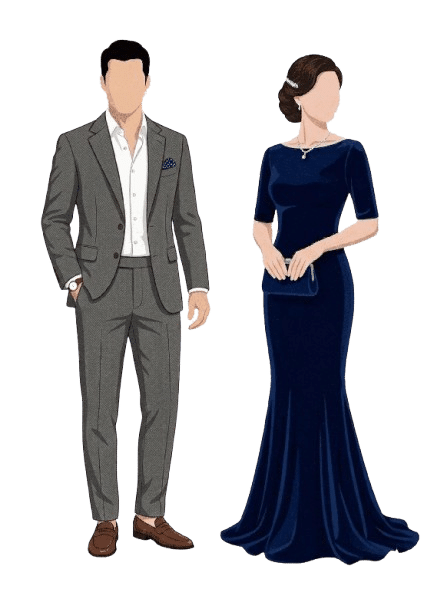

Nuestra Boda
EDNA
ROBERTO

05 DICIEMBRE 2026
00
Días
00
Horas
00
Min
00
Seg
Días
Horas
Min
Seg
Sparks - Coldplay
.svg)
El día más esperado de nuestras vidas finalmente ha llegado; acompáñennos en nuestra boda y sean parte de nuestra historia de amor.
SAVE the DATE
06 • DICIEMBRE • 2026
CON LA BENDICIÓN DE DIOS Y EL AMOR DE
nuestros padres
Víctor Torres Rosales
Maribel Colín Guadarrama
&
Sergio Rojo Medina
Blanca Aracely Castillo Alcantar


Itinerario
CEREMONIA
RELIGIOSA
1:00 p.m.
RECEPCIÓN
3:00 p.m.
Parroquia de Nuestra
Señora del Camino
Hacienda San Jose Actipan
Ver ubicaciónHombres: Traje completo

Mujeres: Vestido largo
HISTORIA DE amor
Nuestra historia comenzó en la iglesia, ahí nos conocimos, aunque fue tiempo después, en la prepa, cuando decidimos darnos la oportunidad de caminar despacio, dejando que nuestra relación creciera con paciencia y confianza.
Durante 10 años hemos compartido risas, sueños, diferencias y aprendizajes, pero sobre todo, mucho amor. Como toda historia real, también hubo momentos difíciles, pero nunca nos soltamos; al contrario, cada experiencia nos enseñó a complementarnos, a apoyarnos y a avanzar siempre juntos.
Hoy, después de una década de elegirnos cada día, y con Dios como guía de nuestro camino, celebramos que nuestra historia continúa. Con el corazón lleno de gratitud y amor, decidimos unir nuestras vidas y comenzar juntos esta nueva etapa, tomados de la mano, para siempre.